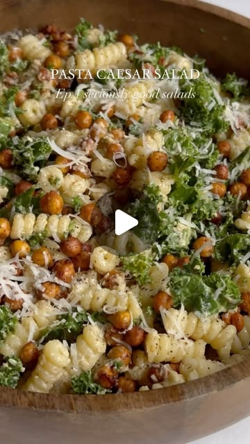

Instagram Reel

Kale Pasta Caesar Salad!😍
video transcript (enriched by ClaudeClaw)
Summary
[CAPTION]
Kale Pasta Caesar Salad!😍
Welcome to episode one of seriously good salads. Today we’re making a kale pasta caesar salad with crispy chickpeas and a creamy caesar dressing🤌🏻.
[CAPTION]
Kale Pasta Caesar Salad!😍
Welcome to episode one of seriously good salads! Today we’re making a kale pasta caesar salad with crispy chickpeas and a creamy caesar dressing🤌🏻. Feel free to customize this Salad any way you like by adding some veggies, grilled chicken etc. Full recipe is below and don’t forget to tag @choosingchia if you make it!🤍
KALE PASTA CAEASR SALAD 🌿
Crispy smoked chickpeas
* 1 can chickpeas (15 oz)
* 1 tbsp olive oil
* 1/2 tsp smoked paprika
* 1/4 tsp sea salt
Caesar dressing (vegan friendly! And promise it tastes just as good!!)
* 2 tbsp olive oil
* 4 tbsp lemon juice
* 2 tbsp tahini
* 1 tbsp dijon mustard
* 1 garlic clove
* 1 tsp nutritional yeast
* 1/4 tsp salt
* 1/4 tsp pepper
* 4 tbsp water
Salad
*8oz pasta
*1/3 cup parmesan cheese
*Shredded kale (about 5 cups chopped)
Instructions:
Crispy smoked chickpeas
Preheat the oven to 375 degrees F. Drain & rinse the can of chickpeas and then place on a baking pan between two paper towels. Roll the chickpeas in the paper towels and remove as much water as possible. Some of the skins will come off the chickpeas, discard the skins. (This will make the chickpeas crispier!) Drizzle olive oil, liquid smoke and sea salt on the chickpeas mixing with your hands or a spoon until evenly coated. Bake for 30-40 minutes.
Caesar dressing
Blend the olive oil, lemon juice, tahini, dijon mustard, garlic, nutritional yeast, salt, pepper and water together in a blender until smooth.
Salad
Add everything to a bowl and mix to combine. Add as much dressing as you like. #pastasalad #pastacaesarsalad #kalesalad #caesarsalad #healthysalad #saladrecipes
[VIDEO]
Welcome to episode one of Seriously Good Salads. We are kicking things off with a kale pasta Caesar salad with crispy, smoky, roasted chickpeas. You start by roasting your chickpeas in the oven until nice and crispy. You can also make them in an air fryer, and then we whip up a Caesar dressing, and then we're gonna add everything to a bowl, our pasta, or kale, or chickpeas, and parmesan, toss everything together, and that's it. I hope you love it.
View original on Instagram Reel →